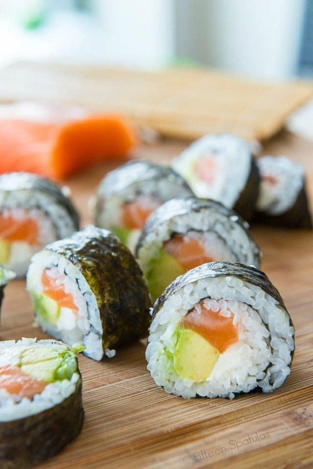

Sushi Recipe

Homemade Sushi
Homemade Sushi is so much cheaper than at the restaurant.
Plus, it's easy and fun to make your own rolls at home,
so you can put all your favorite ingredients into your perfect custom roll — here's how!
Ingredients
- Nori seaweed
- Sushi rice
- Salmon
- Cream cheese
- Avocado
- Bamboo rolling mat
Steps
- Place nori seaweed on bamboo rolling mat
- Place thin layer of rice onto nori and gently flatted the rice
- Cut salmon, avocado and cream cheese to desired size
- Place salmon, avocado and cream cheese evenly across nori
- Roll the sushi tightly using the bamboo mat
- Slice roll to desired size
- Serve with your choice of soy sauce, pickled ginger or wasabi!